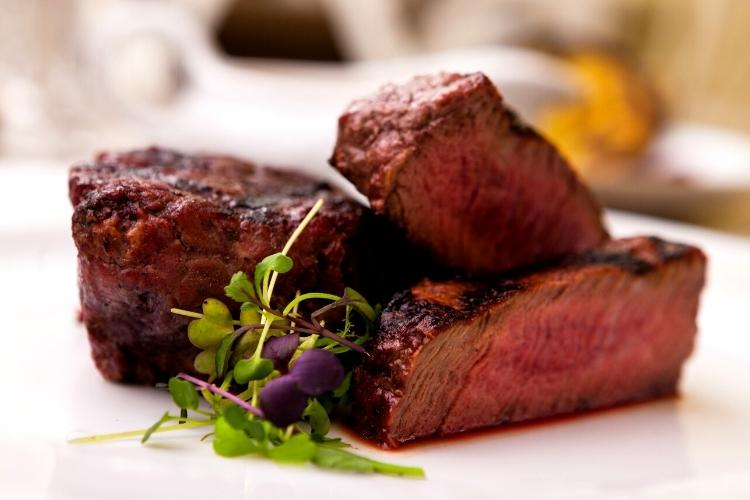

Nós do Frigorífico Dhomingus trabalhamos todos os dias para entregar sempre os melhores produtos para os nossos clientes. Além da maciez e do sabor inconfundível da nossa carne,nossos produtos passam por um rigoroso padrão de qualidade e são inspecionados pelo Ministério da Agricultura para receberem o selo do Serviço de Inspeção Federal.
Confiança e tradição, sustentadas por um rigoroso controle de qualidade.
CARNES EXÔTICAS
CORDEIRO
Como todas as carnes, a de cordeiro também é composta, principalmente, de proteínas. Sendo uma fonte de alta qualidade de proteínas magra (teor entre 25 e 26%), ela também conta com todos os aminoácidos essenciais, que são necessários para o crescimento e manutenção do corpo. Esses fatores fazem dela muito benéfica ao tecido muscular, pois promove a nutrição ideal. O cordeiro é rico em vitaminas e minerais, tais como: vitamina B12 (importante para o sangue e função do cérebro), selênio, zinco (importante para a formação hormonal), niacina,fósforo (essencial para o crescimento e manutenção do corpo) e ferro.
Faça um orçamento
JAVALI
Apesar de associarem o javali ao porco, sua carne é muito menos gordurosa e mais saudável. Seu sabor de caça e sua carne que pouco se retrai quando cozida também são características da peça. O javali possui baixíssimo teor de colesterol e é considerada uma carne magra quando comparada à carne de porco, que possui o dobro de gordura por miligrama.
Faça um orçamento
COELHO
A carne de Coelho é macia, saborosa, versátil, de fácil preparo, além de ser muito saudável, suas excelentes características nutricionais fazem dessa carne uma opção riquíssima para variar o cardápio. Por se tratar de uma carne com pouca gordura, a forma mais indicada de se preparar o coelho é cozido, acompanhado com molho.
Faça um orçamento
PATO
A carne de pato é uma excelente fonte de vitamina B3 - 100 gramas de peito de pato fornece cerca de metade das necessidades diárias de vitamina B3 do ser humano. É uma vitamina fundamental no metabolismo das gorduras do corpo e é também uma vitamina que ajuda a controlar os níveis de colesterol. O pato é uma carne rica em proteínas, contribuindo para a formação de anticorpos que ajudam a combater infeções. Uma porção de 100 gramas de peito fornece mais de metade das necessidades diárias de proteína.
Faça um orçamento
AVESTRUZ
Apesar de ser uma carne de ave, é muito semelhante ao filé mignon bovino. E com uma vantagem, essa carne tem apenas um terço das calorias da carne do boi. Além disso, possui um baixo nível de colesterol e de gorduras e é rica em ácidos graxos polinsaturados, ferro e é de fácil digestão.
Faça um orçamento
CARNES NOBRES
PICANHA
A picanha é uma carne rica em proteína e gordura, o que mantém a saciedade por muito mais tempo. Além disso, pode ser preparada apenas com sal grosso, que é reconhecidamente mais saudável que o sal refinado. Logo, reduz-se a ingestão de elementos químicos prejudiciais à saúde. É aliada ao baixo consumo de carboidratos, assim como pode evitar o aparecimento de diabetes. Outra vantagem da picanha é que ela possui a molécula de Ferro mais facilmente absorvida pelo corpo humano, chamada Ferro-Heme, além do Ferro, a picanha também é rica em Zinco e vitaminas B6 e B12. Esses nutrientes auxiliam no combate a fadiga, anemia e problemas de cicatrização.
Faça um orçamento
BIFE ANCHO
Entre as suas características, então as fibras curtas e uma camadinha de gordura no meio da peça, o que ajuda a carne a não ressecar, ser fácil de preparar, sendo geralmente servida mal passada nos churrascos. O ojo de bife é o miolo desse corte argentino que, em alguns restaurantes, os garçons cortam sem uso de facas, apenas com ajuda de uma colher e um garfo. Assim, fica evidente a maciez da carne. Além do sabor, o bife ancho é uma fonte de proteínas de alto valor biológico e, assim como outras carnes bovinas, fornece B12, creatinina e potássio.
Faça um orçamento
BIFE CHORIZO
A carne de chorizo é extraída da parte dianteira do contrafilé bovino, vizinho do bife ancho e da alcatra. Possui uma farta camada de gordura, concentrada na lateral do corte, além da medida ideal de marmoreio (gordura entremeada à carne). A gordura lateral acentua o sabor inconfundível do bife de chorizo, além de preservar a sua umidade natural e garantir uma suculência fora do comum.
Faça um orçamento
T-BONE
Obife de carne de vaca T-Bone é uma opção gostosa e saudável para quem busca uma alimentação equilibrada e nutritiva. Para prepará-lo, escolha uma carne de qualidade, cuide do ponto de cozimento e evite o consumo excessivo, seguindo sempre as recomendações de um profissional de saúde. Possui uma alta quantidade de vitaminas do complexo B. O cordeiro é uma excelente fonte de vitamina B12, B3, B6, B2 e B5.
Faça um orçamento
PRIME RIB
O prime rib é retirado entre a 6ª e 12ª costelas do boi, sendo a parte mais premium e macia da região. O osso das peças traz mais do que um diferencial estético na hora da apresentação: devido à maior quantidade de colágeno entre ele e a carne, intensifica o sabor único do corte, além de reter o calor no cozimento da peça, tornando-a mais macia. A peça possui um alto grau de marmoreio, devido à quantidade de gordura entremeada na carne, tornando-a uma das mais saborosas e nobres carnes para adicionar ao menu dos seus eventos.
Faça um orçamento
A EMPRESA
Fundada em 1950, o frigórifico Dhomingus vem se construindo os melhores produtos de carnes com sua vasta experiência de anos da empresa, e leva-lo até sua casa. Temos reconhecimento do mercado nacional e internacional quando o assunto e a excêlencia de nosssa carnes. Nossas fábricas estão situadas em Ceará, Fortaleza, o que, estrategicamente, nos permite ter acesso a carnes de várias raças em diferentes pastos. Além de estarmos disponíveis a entrega de nossos produtos para o país inteiro.
NOSSA HISTÓRIA
Na década de 50, éramos apenas uma família do interior do estador atrás de um sonho. Através de esforço, dedicação e emprededorismo chegamos até o nosso sucesso. Nesse 70 anos de história, valorizamos o princípio da familia, nossa empresa sempre está a buscar parceiros com os mesmos valores e implementamos uma visão moderna do mercado. Com todos os resultados crescendo, sempre buscamos ainda mais trazer qualidade aos nossos produtos, seguindo boas práticas e procurando sempre o melhor. Desta forma, o frigórifico Dhomingus é referência de qualidade e confiança.
RECEITAS
LOMBO DE CORDEIRO COM PURÊ DE DOIS QUEIJOS E MOLHO DE JABUTICABA
Ingredientes do lombo
130g de lombo de cordeiro
Ingredientes do purê
130g de bata
20g de leite
10g de manteiga
5g de queijo gruyére
5g de queijo meia cura
25ml de creme de leite
5g de sal
Ingredientes do funghi
75g de funghi chileno
1 colher de sopa de shoyu
200ml de água
10g de manteiga
Ingredientes do molho
20g de manteiga
200g de jabuticaba
40ml de vinho tinto seco
4g de açúcar
Alecrime e pimenta rosa a gosto
Como fazer o purê
Cozinhar as batatas e mágua com uma pitada de sal até racharem. Passá-las no espemedor. Levar em uma panela com leite, manteiga e sal, misturar até criar um creme homogêneo. Acrescentar os queijos e o creme de leite e bater vigorosamente, com colher de pau ou fouet, até dar o ponto de purê grosso e sedoso (aligot)
Como fazer o funghi
Hidratar o funghi com água morna e shoyu. Reservar, aquecer em uma panela manteiga e colocar o funghi já hidrata e salterar
Como fazer o lombo de cordeiro
Selar cada lado do lombo de cordeiro por 2 minutos em uma frigideira bem quente, cortar em fatias finas
Como fazer o molho de jabuticaba
Espremer a jabuticaba retirando a casca e caroço. Colonar na panela o suco da fruta com o vinho, o açúcar a pimenta rosa e o alecrim. Deixar por duas horas me fogo baixo. Coar e deixar novamente em fogo baixo até o ponto desejado
2h 30min
3
JAVALI MARINADO NA CERVEJA
2h 30min
4
A marinada
Talos de salsão picadinho
Folhas de salsão
Cebola picada
Alho esmagado
Cenoura em rodela finas
Ramo de tomilho
Galho de salsinha
Grãos de pimenta do reino
Folhas de louro
Sal
Orégano e tomilho secos
Suco de limão
Duas latinhas de cerveja
A peça de carne vai inteira ao forno, em forma ampla junto com a marinada. Quando der mais ou menos duas horas de fogo vire a carne. E, se necessário, complete a marinada com um pouquinho de água. Quado pronta, retire a carne do forno e deixe descansar. Quando esfriar destrinche a paleta em fatias para servir. Uma boa dica é assar a carne um dia antes e deixar na geladeira, e aquecer na hora de servir junto com o molho resultante da marinada.
O molho
Passe a marinada por uma peneira espremendo bem os pedaços da marinada. O suco resultante vai para a geladeira por algumas horas. Quando se formar por cima do molho uma camada de gordura, retire-a com uma colher e leve o caldo ao fogo em uma panela e deixe reduzir por alguns minutos. Acrescente um pouco de farinha de trigo diluída em água para dar uma leve engrossada no molho e finalizecom um pouco de manteiga, que vai dar brilho e textura aveludada ao molho. Sirva numa tigela ao lado da carne.
Ingredientes
COELHO ASSADO AO MOLHO DE LARANJA
2h
6
Ingredientes
1 coelho de 1,5 a 2,0 kg
1/2 copo de azeite
1 copo de vinho branco sêco
1 copo de suco de laranja
5 dentes de alho amassados
1 colher de sopa ervas finas (ou 1 xícara de chá de salsinha e cebolinha)
1/2 ramo de alecrim
1 xícara de chá de mangerona ou mangericão
Sal a gosto
Pimenta do reino a gosto
2 embalagem de assafácil
Após lavar o coelho em água corrente, retire a gordura que encontrar no seu interior.
Corte, pelas junta, as patas na altura dos joelhos.
Introduza o coelho no assafácil duplo (uma embalagem dentro da outra) e coloque todos os ingredientes juntos, lacrando a embalagem.
Agite delicadamente, para que o tempêro envolva toda a carne e coloque num refratário para ir ao forno no dia seguinte, deixando pernoitar na geladeira.
Leve ao forno médio por 2 horas.
Em seguida, rasgue o assafácil na parte superior e afáste-o, até o coelho dourar.
O caldo que restou no refratário deve ser coado e engrossado com uma colher de maizena para se obter o molho.
Sirva com arroz branco.
Modo de preparo
PEITO DE PATO COM CROUTONS GIGANTES
1h
2
Ingredientes para os croutons gigantes
4-6 fatias de 2 cm cada de brioche ou ciabatta
pimenta-do-reino moída na hora
ramos de alecrim
dentes de alho
sementes de erva-doce
azeite
sal
Coloque as fatias de pão numa assadeira, regue com azeite e salpique sal e pimenta.
Esprema alguns dentes de alho sobre o pão e amasse outros dentes colocando junto na assadeira.
Disponha por cima ramos de alecrim, regue com mais azeite e leve ao forno até dourarem.
Modo de fazer os croutons gigantes
Ingredientes para o peito de pato
1 peito de pato com pele
pimenta-do-reino moída na hora
páprica doce
molho de soja
mel
sal
Tempere o peito de pato com sal, pimenta e páprica.
Coloque-o numa frigideira aquecida com a pele virada para baixo. Quando a pele dourar, vire o peito e aguarde dourar do outro lado, escorra a gordura se necessário.
Junte o mel e o molho de soja, mexa e retire o peito de pato do fogo. Embale em papel laminado até esfriar um pouco. Corte em fatias e sirva em seguida.
Modo de fazer o peito de pato
FILÉ DE AVESTRUZ SERVIDO COM CREME DE ABÓBORA
1h
2

Ingredientes do creme de abóbora
2 dentes de alho processados
1 cebola média picada
1kg de abóbora cabotiá sem casca em cubos
¼ xícara (chá) de água
Azeite, sal e pimenta-do-reino a gosto
Folhas de manjericão a gosto
200g de creme de leite
Refogue alho e cebola numa panela com azeite. Em seguida, acrescente abóbora, temperos, folhas de manjericão e 70ml de água. Agora, misture, tampe e deixe cozinhar até apurar, mexendo se for preciso. Depois disso, transfira para um processador, acrescente creme de leite e bata até ficar homogêneo. Por fim, volte à panela, corrija o sal e esquente quando servir a carne.
Modo de fazer o creme
Ingredientes do filé de avestruz
400g de filé de avestruz (2 filés de 200g)
Sal, pimenta-do-reino e temperos naturais para carne a gosto
1 colher (sopa) de manteiga
½ xícara (chá) de vinho tinto seco
Modo de fazer a carne
Coloque um bife por vez e frite por cerca de 2 a 3 minutos de cada lado. O segredo é adicionar manteiga e vinho durante o processo.